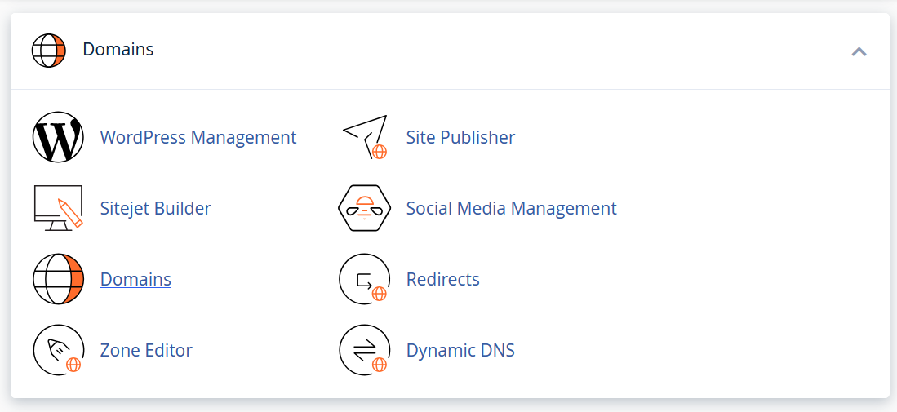
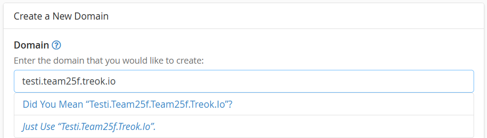
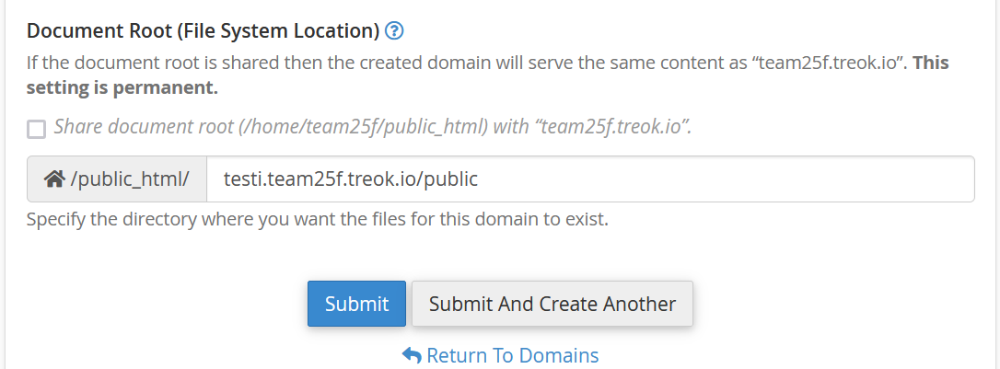
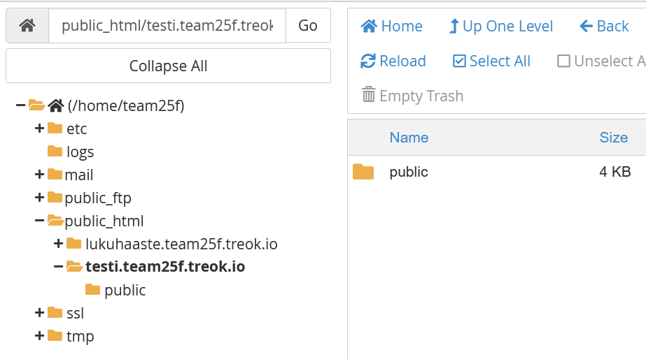
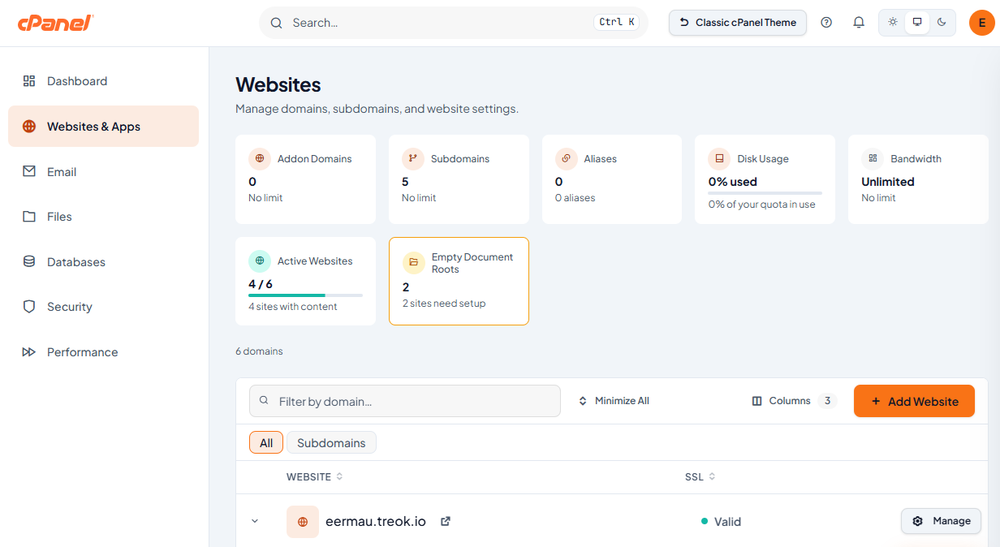
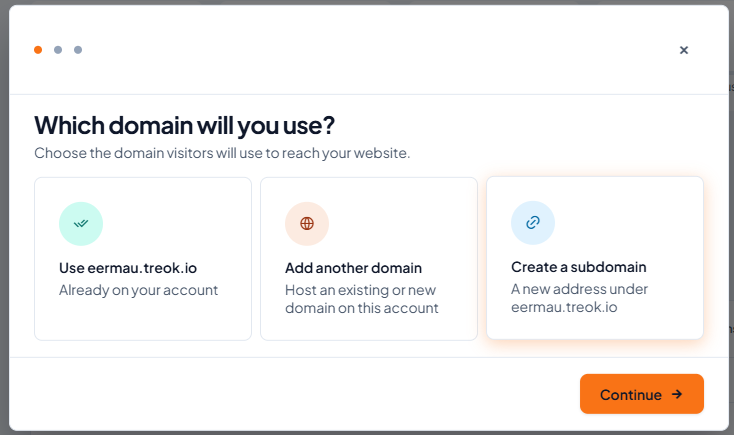
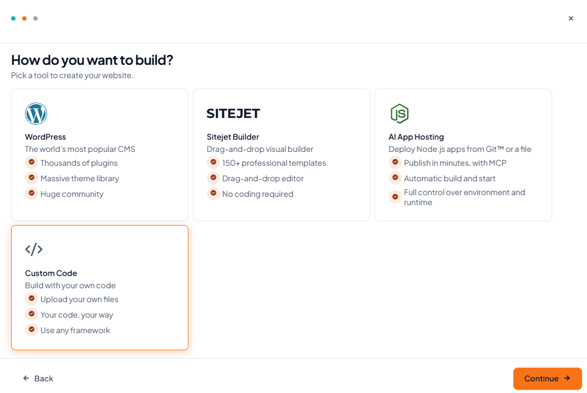
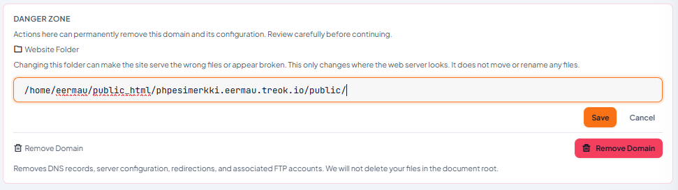

Alidomainin luonti
- Valitse Doamins-sivulta Create A New Domain


- Muista että kansiorakenteessa MVC-mallin juurihakemisto on public-kansio.

- Tee main-haaran toimivasta ohjelmasta zip-paketti paikallisella koneella.
- Tuo kooditiedostot zip-tiedostona juurihakemistoon.

- Pura tiedostot (Extract)
- Tarvittaessa lisää/muokkaa .htaccess-tiedostot public-kansion alla ja aseta tietokannan tunnukset oikein. Tietokannan host yleensä localhost julkisella palvelimella.
Meridian-teema
Uusi Meridian-teema näyttää hieman erilaiselta mutta samat toiminnot löytyvät myös sen alta.
Valitse Websites & Apps ja + Add Website

Lisätään uusi subdomain eli Create a subdomain

Anna prefix joka kuvaa sivustoa (esim. arvostelut, vuokraus, reseptit). Sivuston osoite muodostuu antamastasi etuliitteestä ja sivuston varsinaisesta osoitteesta (tunnus.treok.io).
Kun lisäät oman PHP-projektin niin valitse Custom Code ja sitten Launch my Site.

Jos PHP-työssäsi index.php on esimerkiksi /public-kansiossa niin aseta se kohdassa Websites & Apps / valittu subdomain / Settings
Kannattaa asettaa päälle Force HTTPS. Aseta Website Folder oikeaan kansioon eli lisää /public/
